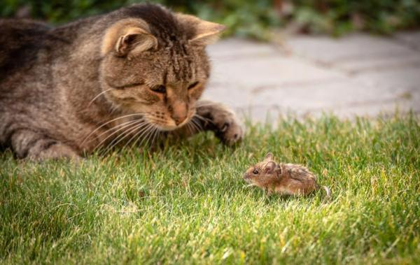
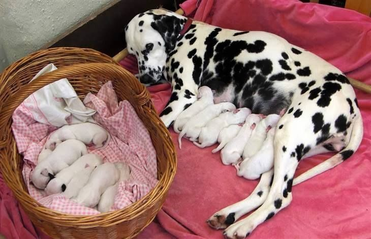

Thinking about getting a kit or pooch? Or you just want to learn more about your own kit or pooch? Find out about dogs and cats here!

When cats bring you "gifts" they are doing it out of love. They think humans are silly kittens who don't know how to hunt for themselves so they just want to help out!
94% of pet owners say their animal pal makes them smile more than once a day.

Dalmatians are born without spots! They are born with plain white coats with their first spots appearing after they are 1 week old.